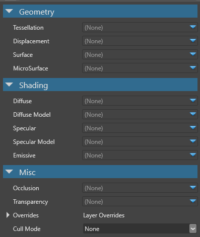

マテリアル属性
中級 アーティスト プログラマー
マテリアル属性は、拡散色や拡散シェーディングモデルなど、マテリアルの中核となる特性を定義します。属性は、ジオメトリ（Geometry）、シェーディング（Shading）、その他（Misc） に分類されます。

属性には 2 種類あります。
- シェーディングモデルの入力値として使用される属性（例えば、Diffuse 属性は、拡散シェーディングモデルで使用される色を提供します）。
- シェーディングモデルを変えることができる属性（例えば、ランバートモデルなどの拡散シェーディングモデルは、diffuse 属性の色を解釈します）。
属性は、マテリアルのレイヤーにも影響します。マテリアルがモデルマテリアルとして直接使用される場合、そのルート属性はすべて最初のレイヤーの一部とみなされます。
また、カスタム シェーダーを記述して、マテリアル属性で使用することもできます。